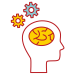
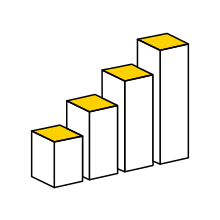
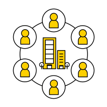
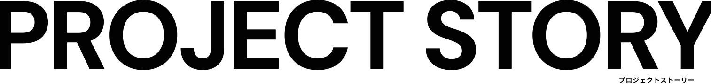
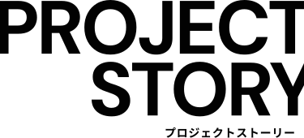

Business Portfolio 事業ポートフォリオ
部分ではなく、全体を描く。M-ESTは、商流を俯瞰し、点在する要素を一つの構造として捉えます。
価値が最大化される流れを設計し、ビジネスが持続的に機能する仕組みを構築します。
-

SCM Solution サプライチェーン設計
モノの流れを、ただ動かすのではない。
調達から供給までを一つの「構造」として捉え、
ビジネスが最も機能する商流を設計します。 -
Market Design 市場設計
市場は、自然に広がるものではない。
製品と顧客の間にある可能性を見極め、
新たな販路とビジネスモデルを構築します。 -

Social Value Creation 社会価値創造
価値は、経済の中だけで完結しない。
社会課題と向き合いながら、
持続可能な仕組みをビジネスとして成立させます。
Scale & Trust 企業規模と信頼性
積み重ねてきた実績が、信頼を形づくる。時間をかけて育まれたパートナーシップと、広がり続けるネットワーク。
その確かな基盤が、次の価値創造を可能にします。
-
売上規模
売上高
300億円規模 -
拠点
 拠点ネットワーク
拠点ネットワーク
国内主要3拠点
佐賀 / 東京 / 大阪 -
取引先
134社の
パートナー企業
※2026年2月時点
 
Network & Partners 主要取引先・ビジネスパートナー
一つひとつの出会いが、太く強い線となり、多種多様なビジネスを最適化し、次なる市場の扉を開き続けます。
この強靭な結びつきが、人々の「笑顔」の起点となります。
Sustainability サステナビリティ
未来を見据えた選択を、
ビジネスの力で。
私たちは、環境や社会への配慮を
「コスト」ではなく「価値創造の一部」と
捉えています。
持続可能なサプライチェーンの構築を通じ、
次世代につながるビジネスを実現します。
RECRUIT
採用情報
君は、ビジネスの開拓者か。
決められた正解をなぞる仕事に、
物足りなさを感じていませんか？
M-ESTの仕事は、モノを運ぶことでも、
決められたオペレーションを回すことでもありません。
私たちが向き合うのは、「この価値を、どう市場につなぐか」
「どんな商流を設計すれば、事業は成長するか」という、ビジネスそのものの構想です。
メーカー、パートナー、マーケット。複雑に絡み合う要素を俯瞰し、
ゼロから流れを描き、形にしていく。それが、M-ESTの仕事です。